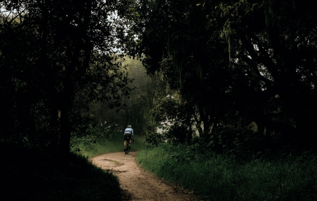
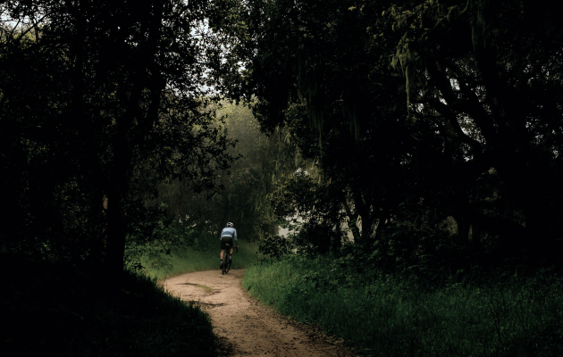
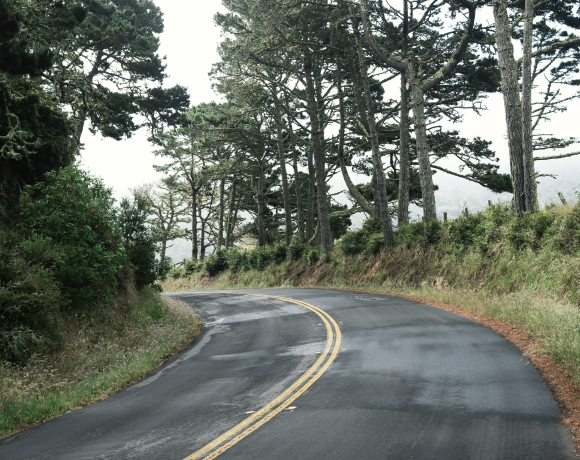

Шоссе, ТТ и Грэвел

Триатлонные старты, горные серпантины или грейвел заезды по живописным маршрутам — нужно только определиться с выбором велосипеда и отправиться в путь.
ПодробнееCannondale Systemsix

«Катайся много или мало, долго или коротко, как хочешь - но катайся»Эдди Меркс
Велогонщик
Шоссе


 

Грэвел


ТТ
Велосипеды


Тренировки
Чтобы найти маршрут для тренировки можно воспользоваться сервисом Komoot, а записать эти тренировки поможет приложение Strava, а также это приложение позволит построить тренировочный план.